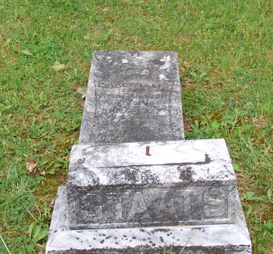

Anna Elizabeth Tolley
about 1818 – 9 January 1876
Tolley line · Rockbridge County, Virginia; Jackson County, West Virginia
Profile status: SUPPORTED
Quick Facts
Born
about 1818, Rockbridge County, Virginia SUPPORTED (the censuses give age 32 in 1850, 42 in 1860 and 52 in 1870 — all three point to about 1818 — and an old compiled account and WeRelate agree on 1818 in Rockbridge County. The shared stone says “Aged 54 Yr” at her death on 9 January 1876, which points to about 1821/22 — the conflict is carried in Research Notes. Don Norman’s about 1813 is contradicted on both ends)
Died
9 January 1876, Jackson County, West Virginia DOCUMENTED (shared headstone, Old Siniaville Cemetery, Row 6: “Staats, Ann Eliza His Wife Died Jan 9, 1876 Aged 54 Yr.” Tricia’s tree gives 8 January — a one-day variant)
Married
Isaac Staats, 8 August 1833, Jackson County, Virginia
DOCUMENTED (Jackson County marriage register, read from the image: “Isaac Staats / To / Eliza Tolla — George Casto — August 8th 1833.” The register names no parents for either spouse)
Occupation
No occupation is recorded in the research folder
Buried
Old Siniaville Cemetery, Staats Mills, Jackson County, West Virginia SUPPORTED (shared stone, Row 6, read from the cemetery transcription; the stone photograph’s inscription is not legible — it shows only the “STAATS” base)
Religion
No church affiliation recorded in the research folder
Immediate Family
Parents
William L. Tolley ×
Elizabeth Litton SUPPORTEDTheir place as Ann Eliza’s parents is carried as the position in the research folder at SUPPORTED — the best hypothesis, not proved. William L., born about 1801 in Rockbridge County, came to Jackson County about 1832; the matching 1850 household is p. 199B (Wm L. 49, wife Elizabeth 51). The rival pair, William Howard Tolley × Elizabeth Hill, is contradicted — “Elizabeth Hill” has no evidence in any record — and the two documents that would prove the parentage, the 1833 marriage bond and William L. Tolley’s probate, are both unfound. No verified Geni profile for William L. Tolley was found in this pass (his FamilySearch is G9YV-RJJ, WikiTree Tolley-553, Tricia’s tree 6189638179 — named in Sources). The full conflicts are in Research Notes.
Spouse
Isaac Staats (born about 1815/16; died 8 April 1890), married 8 August 1833, Jackson County, Virginia
DOCUMENTEDMarriage 8 August 1833, Jackson County — the register writes the bride “Eliza Tolla” and names the minister, George Casto, but no parents for either spouse. Isaac married again after her death, 25 February 1877, Mariah Brickels, 37 — no children by that marriage.
Children
Anderson Andrew Staats (born 8 August 1834 by the stone, 9 August 1834 by the 1921 genealogy; died 17 December 1907; married Mary Casto 6 May 1854)
SUPPORTEDBinda Staats (“Isolinda” / “Isa Findy” in the 1850 census; no dates in the folder; never married; age 14 in 1850 — the trees give 1835–1839 to 1917, unreconciled)
SUPPORTEDMary Jane Staats (born about 1838 — Find a Grave gives 1 November 1838; died 1900 — Find a Grave gives 23 May 1900, Mount Calvary Cemetery, Ripley; married David Casto)
SUPPORTEDWilliam F. Staats (born 1841; died 1914; married Emily Jane Casto 3 June 1866)
SUPPORTEDEnoch Staats (born 9 August 1842 by the 1921 genealogy, 8 August by the stone; died 2 April 1912; married (1) Louisa Casto 14 January 1862, (2) Zona / Arizona Viola Windle 27 May 1894; first postmaster of Statts Mills, 1879)
SUPPORTEDSarah “Sally” Staats (born 10 March 1845 by the 1921 genealogy’s table, 16 March 1845 by its detail; died 25 May 1891; married Granville Morris — 11 February 1863 by the genealogy, 12 February 1861 by Don Norman, unresolved)
SUPPORTEDAnna Staats (born 18 May 1847; died 1930; married Francis Asbury Casto 31 August 1870 — favoured; the 1921 genealogy gives Fred A. Casto, 31 July 1870, carried as the variant)
SUPPORTEDSquire Staats (born 18 June 1850 by the research report, 28 June 1850 by the 1921 genealogy and Find a Grave; died 1921 — Geni gives 14 September 1920; married Nancy Rebecca Dobson 5 March 1868)
SUPPORTEDGranderson Staats (born 1851 — 15 November per Tricia’s tree, September 1852 per the research report; died 14 September 1920; married Telitha Casto)
SUPPORTEDHannah Staats (born 10 December 1854 by the 1921 genealogy, 1855 by Find a Grave; died 20 February 1893 — Don Norman gives 1883; married George Nestor Windle)
SUPPORTEDJohn Franklin Staats (born 14 February 1858 by the stone and Find a Grave — 10, 15 and 16 February also appear; died 30 May 1942; married Sarah Casto)
SUPPORTEDRiley Staats (born 18 March 1860; died 4 October 1936 — Find a Grave gives 1935; married Alice / Mary Alice Casto)
SUPPORTEDPolly Staats (born 17 June 1863; died 1929; married Joel B. Casto)
SUPPORTEDWilliam F. is the direct line. The roster of thirteen is DOCUMENTED by the 1921 genealogy’s table and the censuses; the individual dates are compiled-grade unless a stone or register is cited. An old compiled account claims fourteen children but names only twelve and omits Polly — fourteen is contradicted as stated; Don Norman’s list names only ten and is incomplete. Anderson’s sons Jacob and Isaac, born December 1872, are twins. Hannah’s three infant children by George Nestor Windle (born and died 1886, 1888, 1893) stand on the Old Siniaville Row 5 transcription. William A. Staats is not adopted as a son of William F. and Emily Jane — see Research Notes.
Siblings
No brother or sister of Ann Eliza is corroborated by any record.
UNPROVEDAn old compiled account names brothers Charles, Jourdan and Granderson, sisters Sarah and Martha, and half-brothers John, Henry and William Hill — none of them appears on any tree or in any record in the folder, and Tricia’s tree carries none of them either, so none is carried here. Her siblings are unknown, not none.
On Family Tree Sites
Life Timeline
about 1818 · age 0
Born, Rockbridge County, Virginia SUPPORTED (censuses 32/42/52 in 1850/1860/1870 — the stone’s “Aged 54” points to about 1821/22; see Research Notes)
8 August 1833 · age about 15
Married Isaac Staats, Jackson County DOCUMENTED (marriage register image; the bride is written “Eliza Tolla”; minister George Casto)
1850 · age 32
Census, Jackson County, in Isaac’s household DOCUMENTED (image read; family 358)
1860 · age 42
Census, Jackson County SUPPORTED (cited, M653_1354 p. 592; the image was not re-read in this pass)
1870 · age 52
Census, Jackson County; her mother Elizabeth Tolley, 72, widowed, in the household SUPPORTED (placement confirmed through FamilySearch and Tricia’s census sources; the image was not re-read in this pass)
9 January 1876
Died, Jackson County DOCUMENTED (shared headstone, Old Siniaville Cemetery, Row 6; “Aged 54 Yr”)
Burial
Old Siniaville Cemetery, Staats Mills SUPPORTED (shared stone, Row 6)
Life Story
Anna Elizabeth Tolley was born about 1818, in Rockbridge County, Virginia, and married Isaac Staats on 8 August 1833 in Jackson County, when she was about fifteen and he about seventeen. The marriage register writes her “Eliza Tolla” and names the minister, George Casto, but no parents for either spouse. The name on this page is the settled form, Anna Elizabeth Tolley; “Elizabeth” as a middle name appears only in an old compiled account, and the records themselves give Eliza, Anne E., A.E., and Ann Eliza. She settled with Isaac at Staats Mills, where the censuses find her through 1870, and thirteen children followed, William F. carrying the line.
The 1921 genealogy remembers her as “an expert ghost-story teller” — “many an evening was spent by her telling the neighboring children, as well as her’s, various ghost stories and old legends and traditions.” That is family colour, labelled as such, not a record. The same genealogy calls her husband the man who “erected the first mill” at Staats Mills; the deed shows he bought the mill seat from Jacob Pfost in 1858, and did not build the first mill.
Her parents are carried as William L. Tolley × Elizabeth Litton, the position in the research folder, at SUPPORTED — the best hypothesis, not proved. William L., born about 1801 in Rockbridge County, came to Jackson County about 1832 and settled on Tug Fork; the matching 1850 household is p. 199B, William L. 49 with wife Elizabeth 51. The rival pair, William Howard Tolley × Elizabeth Hill, is contradicted as a pair: “Howard” appears in no record anywhere, and “Elizabeth Hill” has no evidence in any record — though two compiled genealogies carry the Hill name, and Geni’s Elizabeth profile now shows a second husband, William S. Hill, which may explain where the Hill name came from. The two documents that would settle the parentage, the 1833 marriage bond and William L. Tolley’s probate, are both still unfound. Her mother Elizabeth was still living in 1870, aged 72 and widowed, in Isaac and Ann Eliza’s household — and in 1880 in the household of her son G. P. Tolley, not Granderson Staats as an earlier reading had it.
Ann Eliza died on 9 January 1876, aged 54 by the stone, and is buried with Isaac under their shared stone in Old Siniaville Cemetery, Row 6. The stone photograph’s inscription is weathered past reading — the dates here come from the cemetery transcription, not from the photograph. Isaac married again the next year, Mariah Brickels. No portrait of Ann Eliza exists anywhere — not in the folder, and not on any tree site checked.
Sources and Evidence
- Shared headstone, Old Siniaville Cemetery, Row 6, Staats Mills, Jackson County, West Virginia (cemetery transcription, Jackson County WVGenWeb, visited 11 May 2006, re-read live 7 November 2026): “Staats, Ann Eliza His Wife Died Jan 9, 1876 Aged 54 Yr” and “Staats, Isaac Died April 8, 1890 74 Yr” DOCUMENTED (transcription; the stone photograph’s inscription is not legible — the photograph shows only the “STAATS” base)
- Jackson County Register of Marriages, 8 August 1833 (image marr1833.jpg, FamilySearch film 4226774, frame 00021 — image read in the dig): “Isaac Staats / To / Eliza Tolla — George Casto — August 8th 1833” — the bride is written “Eliza Tolla”; no parents are named DOCUMENTED (register image)
- United States census 1850, Jackson County, Virginia, District 27, M432_953 p. 213B, family 358 (image read in the dig): Isaac Staats 35, farmer; Anne E. 32; Anderson 16, “Isa Findy” 14, Mary J. 12, William 11 (the folder’s transcription reads 10), Enoch 8, Sarah 5, Anny 3, Squire 1 DOCUMENTED (image read)
- United States census 1870, Washington Township, Jackson County, West Virginia, M593_1689 p. 415A, and 1880 census: Elizabeth Tolley, 72, widowed, in Isaac’s 1870 household; in 1880 in son G. P. Tolley’s household SUPPORTED (placements confirmed through FamilySearch residence facts and Tricia’s census sources; the census images themselves were not re-read in this pass)
- Harold Staats, Genealogy of the Staats Family (Ripley, West Virginia, c. 1921, public domain; full text at archive.org): Ann Eliza’s entry — “Eliza Tolla”, the ghost-story passage, the 13-child table; Isaac’s entry, pp. 43–44 FAMILY ACCOUNT (compiled by Isaac’s own great-grandson from the 1918–1919 Staats–Casto reunion papers — a lead, not proof)
- The Canva story for this couple (extracted verbatim to the Notes folder, 6,636 B): born 1818 in Rockbridge County; daughter of William Howard Tolley × Elizabeth Hill; brothers Charles, Jourdan and Granderson, sisters Sarah and Martha; fourteen children; Isaac’s mill built in the 1860s; Isaac died aged 73; Anna died aged 57 FAMILY ACCOUNT (compiled — its errors are flagged in Research Notes, not repeated as fact)
- John A. House, History of Jackson County (1906), via the DeWitt compilation: Thomas Carney × Polly Parsons; Anna Carney’s three marriages; the Parsons half proved by the 1849 Jackson County indenture (Deed Book 7, pp. 272–274) FAMILY ACCOUNT (compiled county history)
- Litton Study Group (rootsweb deschart): “William Tolley was born in Rockbridge Co VA. He came to Jackson county about 1832 and located on Tug Fork” SUPPORTED (compiled study-group reconstruction, not a primary record)
- Jackson County, West Virginia, Past and Present (1990): early-settler and landowner lists — William L. Tolley and Enoch C. Thomas on Upper Mill Creek; “Joseph and Mary (Hill) Tolley” in the Staats Mills area, a possible lead for Ann Eliza’s parents; the Staats Mill chapter, pp. 64–65 SUPPORTED (compiled, but it quotes the 1858 Pfost deed)
- Geni profiles, read live 7 November 2026: Anna Elizabeth Tolley 6000000113751177977; Isaac Staats 6000000008104600284; Elizabeth (Litton) Tolley, aka Elizabeth Hill, 6000000154948089821; William Howard Tolley 6000000154948017822 (the contradicted pair — not adopted, see Research Notes); the thirteen children — Anderson Andrew 6000000079155666824, Isolinda (Binda) 6000000000630106999, Mary Jane 6000000000630107009, William F. 6000000000630105205, Enoch 6000000000630105653, Sarah 6000000028692591389, Anna 6000000000630101250, Squire 6000000082347908930, Granderson 6000000000630105231, Hannah 6000000000630105255, John Franklin 6000000004988183355, Riley 6000000036900728307, Mary Pauline (Polly) 6000000000630072483 SUPPORTED (compiled; every Geni ID verified live by the pull, character for character)
- FamilySearch, read live 7 November 2026: Ann Eliza Tolley L5N8-G2Y; Isaac Staats 278V-D2W; William F. Staats GQC7-TTW; William L. Tolley G9YV-RJJ; Elizabeth Litton LHHC-7ZC (FamilySearch also carries Elizabeth Hill as an AKA, with 0 sources); Cornelius Staats GMLS-K98; Anna Carney Thomas LB4Y-JSW SUPPORTED
- WikiTree, read live 7 November 2026: Ann Eliza Tolley Tolley-410 (still attaches the WRONG 1850 household, p. 194B, Household A with “Grandson Tolly” 20 — the matching household is p. 199B, Wm L. 49 + Elizabeth 51); Isaac Staats Staats-539; William L. Tolley Tolley-553; Elizabeth (Litton) Tolley Litton-570 (the Litton line is unsourced on WikiTree — Korin Litton, born about 1766, with “[Tolley grandfather? please help]” placeholders) SUPPORTED
- Find a Grave, read live 7 November 2026: Ann Eliza Tolley 8379892; Isaac Staats 8372383; Anderson Staats 48398224; Mary Jane Casto 43172419; William F. Staats 8379958; Enoch Staats 7507959; Anna Casto 43172362; Squire Staats 106917251; Granderson Staats 8395373; Hannah Windle 142568722; John Franklin Staats 43170888; Riley Staats 43170760; Polly Staats Casto 141238107; no memorials found for Isolinda/Binda Staats, Sarah Morris, Cornelius Staats, Anna Carney Thomas, William L. Tolley, or Elizabeth Litton SUPPORTED
- Ancestry, Brewster Family Tree (tree 212654536), read live 7 November 2026: Ann Eliza Tolley 162810167814; Isaac Staats 162810167353; William F. Staats 162810160533 SUPPORTED
- MyHeritage, Brewster Site, read live 7 November 2026: Ann Eliza Tolley 1500010; Isaac Staats 1500009; William F. Staats 1000087; the other twelve children are not on MyHeritage SUPPORTED
- Tricia’s Ancestry tree (tree 44342901), read signed in 7 November 2026: Ann Eliza Tolley 6189638258 (as Anne Eliza Talla); Isaac Staats 6189638259; William F. Staats 6189641284; William L. Tolley 6189638179 (1793–1873, died 27 March 1873 in Somerset, England — almost certainly a conflation error) × Elizabeth Litton 6189638180 (1798–1894); Ann Eliza’s dates on Tricia are 1818 – 8 January 1876; media yield ZERO — Ann Eliza’s Gallery holds one templated Story Teller document card, no photograph SUPPORTED (harvest; no photos or documents were filed — none is attached to any in-scope profile)
- Findmypast, checked signed in 7 November 2026: 13 locked trees, no trial; no tile SUPPORTED (genuine negative)
- Old Siniaville Cemetery transcription, Jackson County WVGenWeb (re-read live 7 November 2026): Row 6 stone readings, plus the family stones on Rows 1, 2, 7, 8 and 9 — Granderson 1851–1920, Riley 18 March 1860 – 4 October 1936, John Franklin 14 February 1858 – 30 May 1942, Squire 1850–1921, Enoch 9 August 1842 – 2 April 1912 SUPPORTED
- Books hunted, not located: Corinne Staats Fisher, History of Staats Mills Community and Bridge (1983, library-only), and her Jackson Herald series (1977–78, free at wvjchs.org, not viewed) SUPPORTED (not located; if they cost money, a Books & Sources note only)
Grades: DOCUMENTED an original record says it · SUPPORTED several records point to it · FAMILY ACCOUNT the family’s own telling · UNPROVED a lead, not proved.
Research Notes and Open Questions
- Grades on this page: DOCUMENTED means an original record was read; SUPPORTED means a claim attested by filed research — the census images, the marriage-register image, the cemetery transcription, the signed-in tree checks — but not by an original record read here; UNPROVED means a claim carried from the research folder with no corroboration found.
- Birth year, unresolved: about 1818 by three censuses (32 in 1850, 42 in 1860, 52 in 1870), an old compiled account, and WeRelate — all agreeing on 1818 in Rockbridge County. The shared stone says “Aged 54 Yr” at her death on 9 January 1876, which points to about 1821/22. The Canva story’s “died at the age of 57” actually fits the censuses better than the stone does. Don Norman’s about 1813, died about 1870, is contradicted on both ends by the stone and the censuses. This page carries about 1818 at SUPPORTED, with the stone’s 54 carried as the conflict.
- Death: 9 January 1876 by the stone; Tricia’s tree gives 8 January 1876 — a one-day variant, unresolved.
- Name forms, by source — do not manufacture a middle name: “Eliza Tolla” (1833 register — the record form); “Anne E.” (1850 census); “Eliza” (1866 marriage index, as William’s mother); “A.E.” (1870 marriage index); “Ann Eliza” (stone); “Anna Elizabeth Tolley” (the settled page form). “Elizabeth” as a middle name appears only in an old compiled account. The older genealogy’s “Elizabeth Tolley” for Isaac’s wife is most likely the same woman (the register’s “Eliza”), but the identity question is formally open until the 1833 bond is read.
- Parentage: William L. Tolley × Elizabeth Litton are Ann Eliza’s parents as carried in the research folder, at SUPPORTED — the best hypothesis, not proved. William L., born about 1801 in Rockbridge County, came to Jackson County about 1832 and located on Tug Fork; the 1990 county-history landowner lists place him on Upper Mill Creek, and the matching 1850 household is p. 199B (Wm L. 49, wife Elizabeth 51). WeRelate gives William L. 1793–1873, which conflicts with the about-1801 birth (49 in 1850); about 1801 is carried at SUPPORTED with the conflict noted. Tricia’s William L. (1793–1873, died 27 March 1873 in Somerset, England) is almost certainly a conflation error. William L. carries a War of 1812 Pension Application Files Index, 1812–1815, source on Tricia’s tree — a new lead, unverified whether it is this William.
- “William Howard Tolley × Elizabeth Hill” is CONTRADICTED as a pair. “Howard” appears in no record anywhere; the 1799–1842 William Howard Tolley has no established wife, residence, or children; an old compiled account conflated two Williams (Ann Eliza’s father was William L., born about 1800; the 1779 birth year belongs to an older William who married Sally Taylor in 1800). “Elizabeth Hill” has zero evidence in any record — though two compiled genealogies carry it, and FamilySearch carries Elizabeth Hill as an AKA with 0 sources. Geni’s Elizabeth profile now shows a second husband, William S. Hill, which may explain where the Hill name came from. A possible lead, not proved: the 1990 county history’s early-settlers roster lists “Joseph and Mary (Hill) Tolley” in the Staats Mills area alongside “Isaac and Ann Eliza (Tolley) Staats” — do not link without a source; check the 1833 bond first.
- WikiTree errors, recorded here (not changed on the trees): Tolley-410 still attaches the WRONG 1850 household (p. 194B, Wm Tolly 51, no wife — the matching household is p. 199B); “Grandson Tolly” on WikiTree is a mis-transcription of “Granderson”; the Litton line is unsourced on WikiTree (Korin Litton, born about 1766, with “[Tolley grandfather? please help]” placeholders). Elizabeth’s parents on the Each Generation page are Korrin Michael Litton × Agnes Marie Dempsey — the Litton line is unsourced, and the 2026-10-18 parent-proof report notes it as such.
- Siblings: none corroborated by any record. An old compiled account names brothers Charles, Jourdan and Granderson, sisters Sarah and Martha, and half-brothers John, Henry and William Hill — Canva-only, no other source in the folder corroborates any of them, and Tricia’s tree carries none of them. Do not carry the Canva names onto the pages without corroboration.
- Elizabeth Tolley, her mother: the 1870 census has 72-year-old widowed Elizabeth Tolley in Isaac’s household — CONFIRMED through FamilySearch residence facts and Tricia’s 1870 census source — and the 1880 census has her in son G. P. Tolley’s household, not Granderson Staats’s as an earlier reading had it. Both WikiTree profiles (Tolley-410 and the Litton profile) list Ann Eliza as her daughter.
- Child roster: thirteen carried. An old compiled account claims fourteen but names twelve and omits Polly; Don Norman names ten (omits Binda, Squire, Riley). The child-date conflicts stand: Anderson born 8 against 9 August 1834; Sarah born 10 against 16 March 1845, married 11 February 1863 against 12 February 1861; Anna’s marriage — Francis Asbury Casto, 31 August 1870, favoured (Geni, Find a Grave, and the shared headstone “F. ASBURY CASTO”) against Fred A. Casto, 31 July 1870, in the 1921 genealogy — both are carried; Squire born 18 against 28 June 1850, died 1921 against Geni’s 14 September 1920; Granderson born September 1852 against 1851; Hannah born 10 December 1854 against 1855, died 20 February 1893 against 1883; John Franklin born 10, 14, 15 or 16 February 1858 (the stone and Find a Grave give 14 February); Riley died 4 October 1936 against Find a Grave’s 1935; William’s 1850 census age reads 10 in the folder’s transcription against 11 as read from the image — unresolved.
- William A. Staats and Elvira Post are NOT adopted. The attachment exists on Geni and on FamilySearch — Elvira with William A. as her only child, a step-child, and no marriage event on FamilySearch; Elvira’s Geni profile was added by Rick on 31 October 2026 with no vitals or sources — and Find a Grave lists William A. as William F.’s child with Emily Jane as sole spouse. Tricia’s tree and the Brewster Ancestry tree have neither. William F.’s child set differs across all four sources; the union is nine children. The Geni IDs: William F. Staats is 6000000000630105205 — his own live page carries that ID as his profile, and the pull verified it live — and William A. Staats is 6000000180457232870. An earlier reading mistook Sarah Louise’s live page for the father’s ID; her page links 6000000180457232870 as “William A. Staats” in her Siblings card, not as her father.
- Lore, labelled as lore, never evidence: Ann Eliza “an expert ghost-story teller” (1921 genealogy). The Canva story’s frontier-colour passages (water-power engineering education, “architects of community, industrialists of the early Appalachian frontier”, opening the home to passing preachers, sheltering neighbours in storms) are that account’s own writing — usable only as its voice, labelled, never as documented fact. The 1921 genealogy’s aside that a close relative of Eliza Tolla “received a congressional medal for bravery in action during the Civil War” is DEBUNKED — no Tolley or Tolla appears on the complete Civil War Medal of Honor roll. No evidence connects Ann Eliza, Isaac, Cornelius, Anna Carney, William Tolley, or Elizabeth Litton to a named Native nation — do not claim it.
- No portrait of Ann Eliza exists anywhere — not in the folder, and not on any tree site checked. Her Gallery on Tricia’s tree holds one templated Story Teller document card, no photograph. The shared headstone is the hero. A tintype of her son Riley exists on Geni and Find a Grave; it was not retrieved in this build, and no child of this couple has a profile page.
- Tricia’s Ancestry harvest, signed in 7 November 2026: 21 in-scope profiles sought, 17 present, 4 absent (Anna 1847–1930, Hannah 1854–1893, Polly 1863–1929, James Chancey). Media yield ZERO. Anomalies: Riley is attached to the wrong Isaac (1701–1767) as his child by Ann Eliza, labelled half-brother, and Ann Eliza carries a duplicate 8 August 1833 marriage to that same Isaac; the real Enoch (1842–1912) is absent, replaced by a phantom female Enoch Staats, born 1831. Ann Eliza’s parents on Tricia are William L. Tolley (1793–1873, died Somerset, England) × Elizabeth Litton (1798–1894) — sides with the SUPPORTED pair, with William’s dates almost certainly conflated.
- Open: the 1833 marriage bond (does it name a parent or guardian for either party?); William L. Tolley’s probate (the second decider for Ann Eliza’s parentage); the 1866 marriage-register image (William F. × Emily Jane Casto — it would DOCUMENT William’s parentage); the 1860 census image (M653_1354 p. 592) and the 1870 census image (M593_1689 p. 415A) — placements corroborated, images not re-read; the 1880 census image (Elizabeth in G. P. Tolley’s household, corroborated through FamilySearch, image not re-read); William’s 1850 age digit (10 against 11); the 1840 census analysis in local scratch (not checked in this pass); the Geni Tolley/Hill merge-conflict dialogs (open for Rick’s call); the 1921 genealogy’s pp. 43–44 scan (the full text was read; the scan was not viewed).
- Tree checks, signed in 7 November 2026: Geni (Ann Eliza 6000000113751177977; Isaac 6000000008104600284); FamilySearch (L5N8-G2Y; 278V-D2W); WikiTree (Tolley-410; Staats-539); Ancestry Brewster tree (162810167814; 162810167353); Ancestry Tricia’s tree (6189638258; 6189638259); Find a Grave (8379892; 8372383); Findmypast (13 locked trees, no trial); MyHeritage (1500010; 1500009).